Olá! Meu nome é Rayan Marcelo de Oliveira Trindade. Nasci e cresci em Itu, a famosa "cidade dos exageros", onde cheguei ao mundo em 12 de dezembro de 2001. Atualmente, aos 23 anos, resido em Itu com minha esposa Melissa e nossos dois cachorros, LiLi e Shalom, na casa de meus avós. Sempre fui uma pessoa eclética, apaixonada pela natureza e ávida por aprender sobre as boas experiências que a vida pode oferecer, estando sempre receptivo a novas vivências e conhecimentos. Minha jornada é marcada por uma busca constante por crescimento e inovação, especialmente no campo da tecnologia, onde busco aplicar minhas habilidades e paixões para criar soluções significativas.
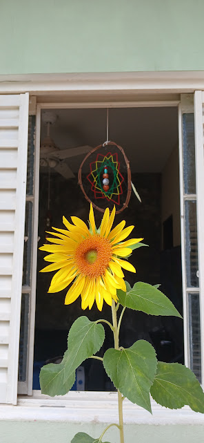Desde jovem, explorei e pratiquei diversos esportes, como ciclismo BMX, skate street e futebol, que me ensinaram sobre disciplina e trabalho em equipe. No entanto, meu grande fascínio sempre foram os jogos eletrônicos, que não apenas me divertiam, mas também despertaram um profundo interesse pela tecnologia e pelo universo digital. Essa paixão inicial foi o catalisador para minha jornada no mundo da informática e programação.
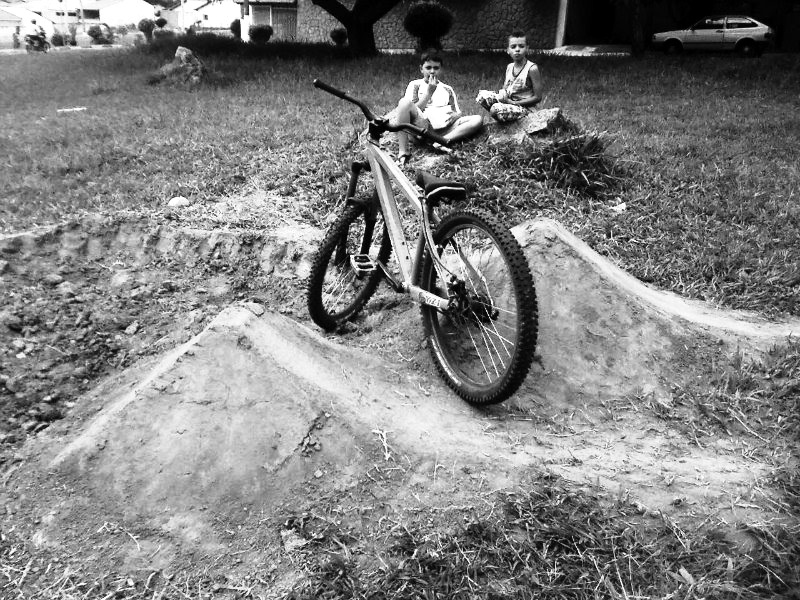 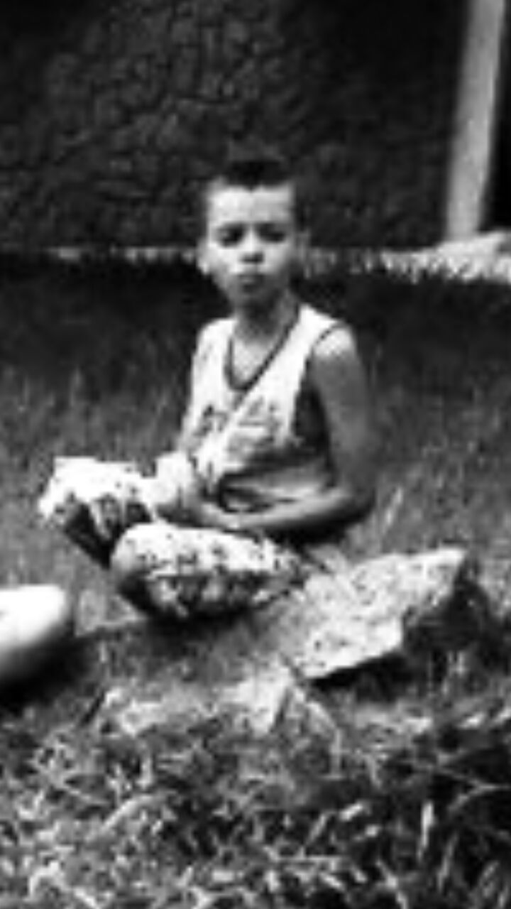 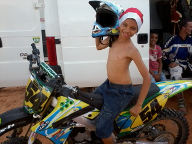 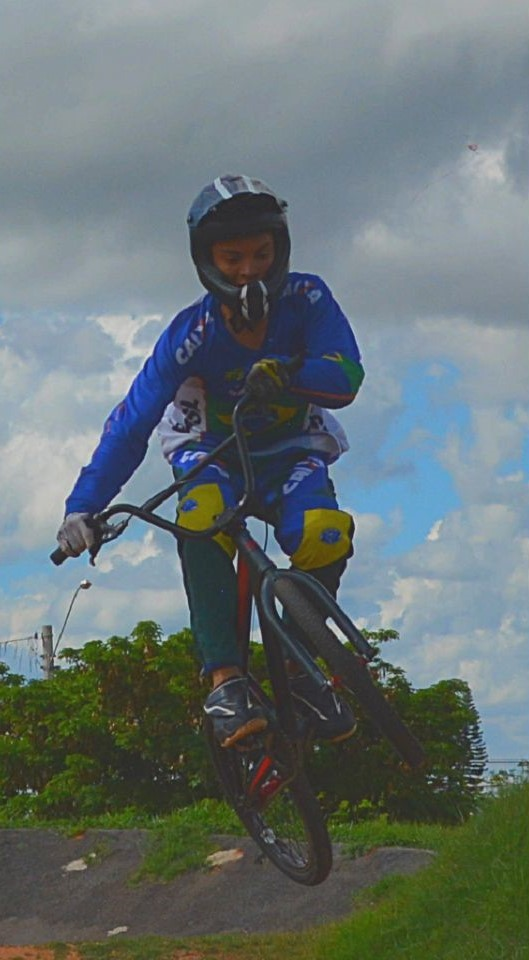 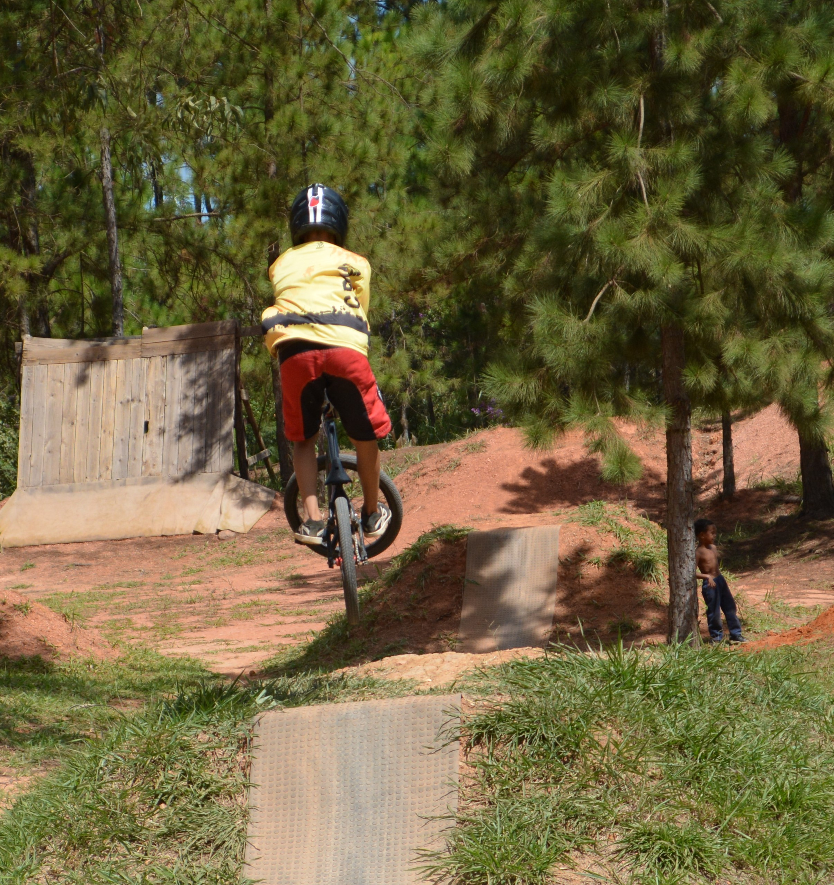 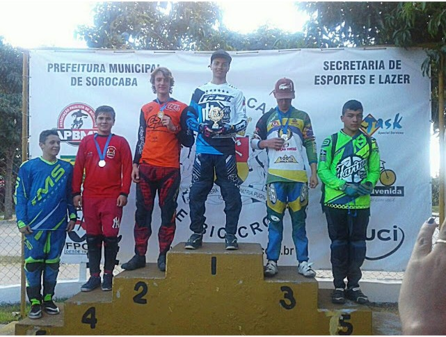 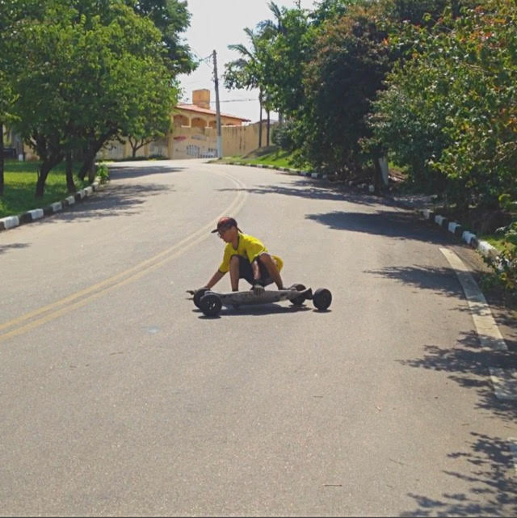Comecei meu primeiro curso de informática aos 10 anos, onde adquiri conhecimentos fundamentais sobre o sistema operacional Windows, o pacote Microsoft Office (Word e Excel), criação de apresentações multimídia e navegação na Internet. Essa experiência inicial solidificou meu interesse pela área. Aos 15 anos, aprofundei meus estudos com um curso técnico em Hardware na escola Onbyte, onde aprendi sobre manutenção e substituição de componentes de computadores, expandindo minha compreensão sobre o funcionamento interno da tecnologia.
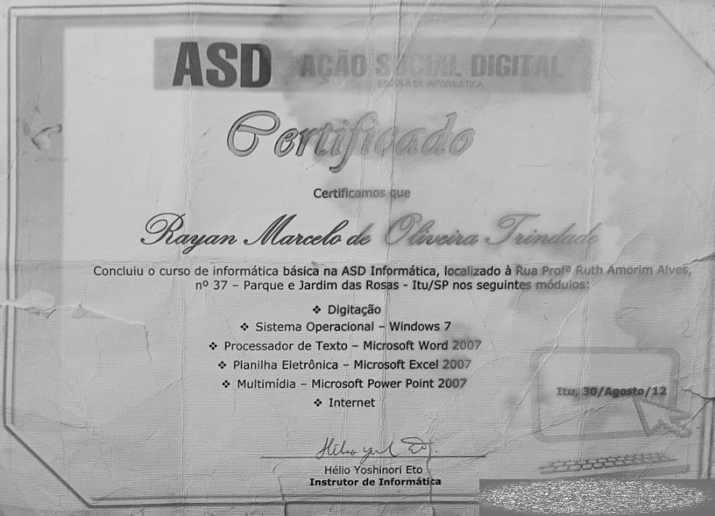 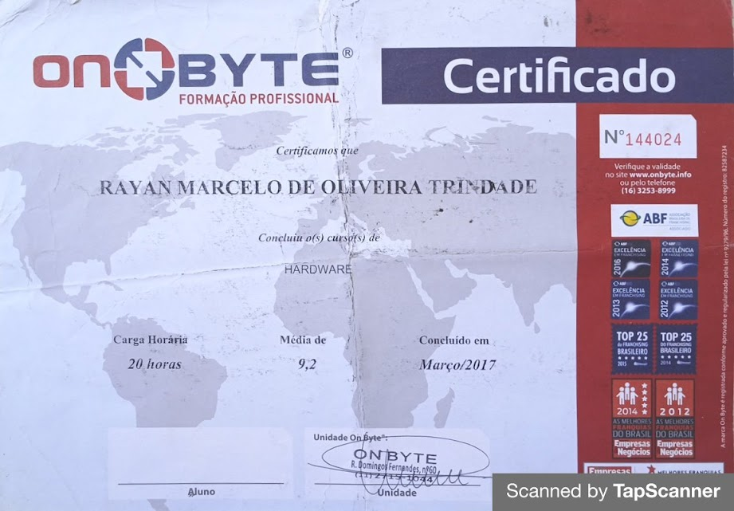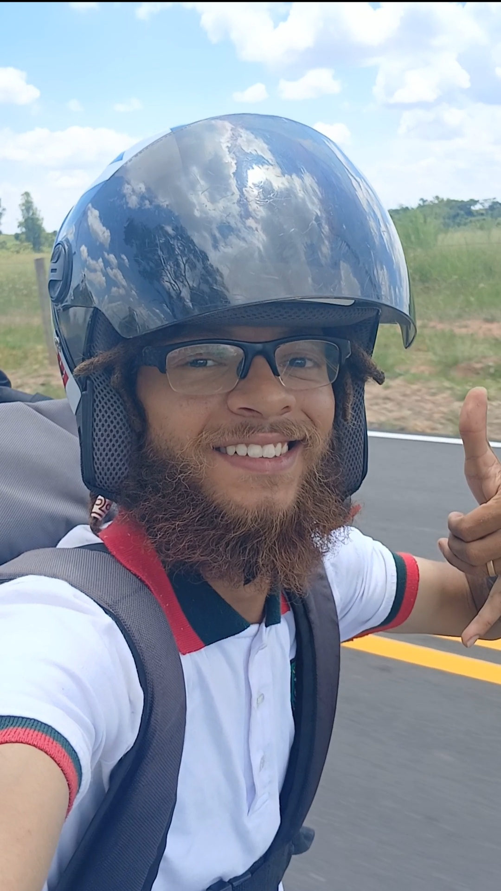 Apesar de ter conhecimentos na área de informática, nunca atuei profissionalmente nesse campo. Utilizei meus conhecimentos principalmente para atender às minhas próprias necessidades e às de pessoas ao meu redor. Fui levado por uma paixão pelas duas rodas da bicicleta, que me conduziu à profissão de motoboy, uma profissão que me orgulho muito.